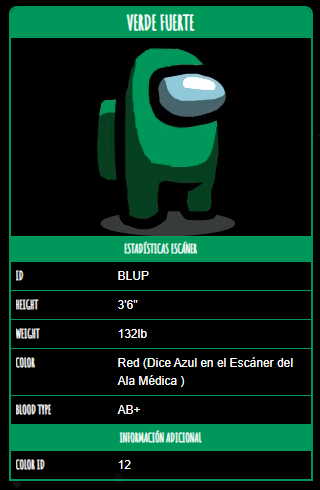

Verde Fuerte

Verde Fuerte
(o Verde Eucalípto) es un color que no se
puede seleccionar a través del menú de personalización. Este color se asigna
a todos poco antes de que un jugador se conecte. Los jugadores con este color tienen el nombre '???'.
Ya que este color se usó para conectar personas antes de la actualización 2020.9.22. Es posible que veas a este
jugador por una fracción de segundo cuando alguien se une.
Curiosidades
- El nombre del color contiene partes del nombre del desarrollador 'ForteBass'.
- Este es el único compañero de tripulación que tiene sangre tipo AB +.
- Verde Fuerte tiene 132 libras de peso, mientras que el resto de los colores pesan 92 libras.
- Un jugador de Verde Fuerte aparecerá en la pantalla durante una fracción de segundo cada vez que un jugador se una.
- Si un jugador de Verde Fuerte muere, su cuerpo se convierte en el cuerpo de Rojo.
- Si un jugador de Verde Fuerte tiene un Mini Tripulante, aparecerá como Rojo.
- En el chat de texto y el panel de votación, los jugadores de Verde Fuerte aparecerán como Rojo pero sin nombre.
- Verde Fuerte era el viejo Verde (visto en el tráiler) y probablemente se llamaba Verde Fuerte porque Verde era llamado Fuerte.
- Verde Fuerte se confunde fácilmente con Verde, ya que son bastante similares, debido a que Verde Fuerte es el antiguo Verde.
- En el Modo Libre, un jugador de Verde Fuerte no puede abrir el mapa y convocar una Reunión correctamente (la interfaz se estropeará).
- Un jugador puede convertirse en Verde Fuerte si selecciona un color cuando alguien con ese color se une.